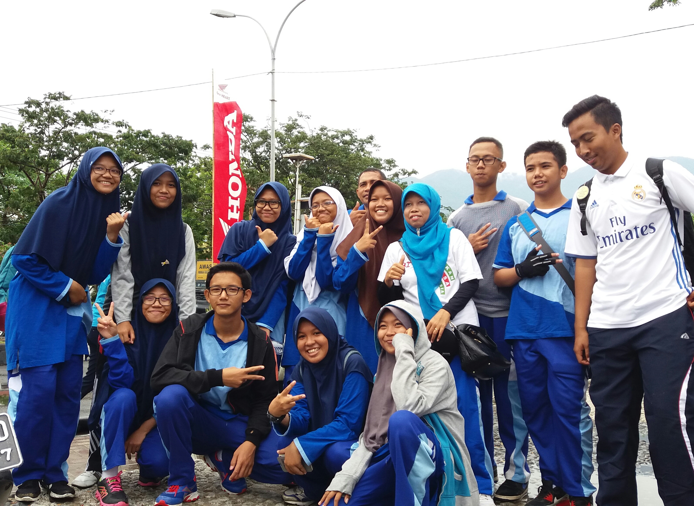
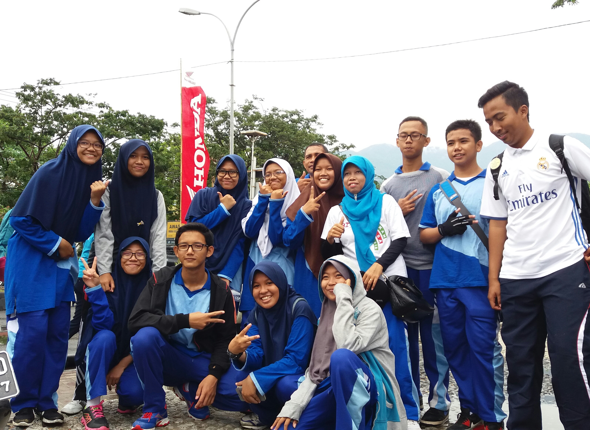
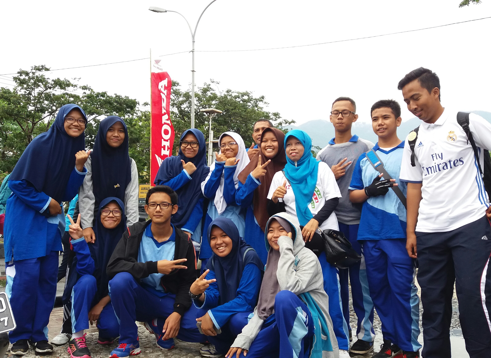
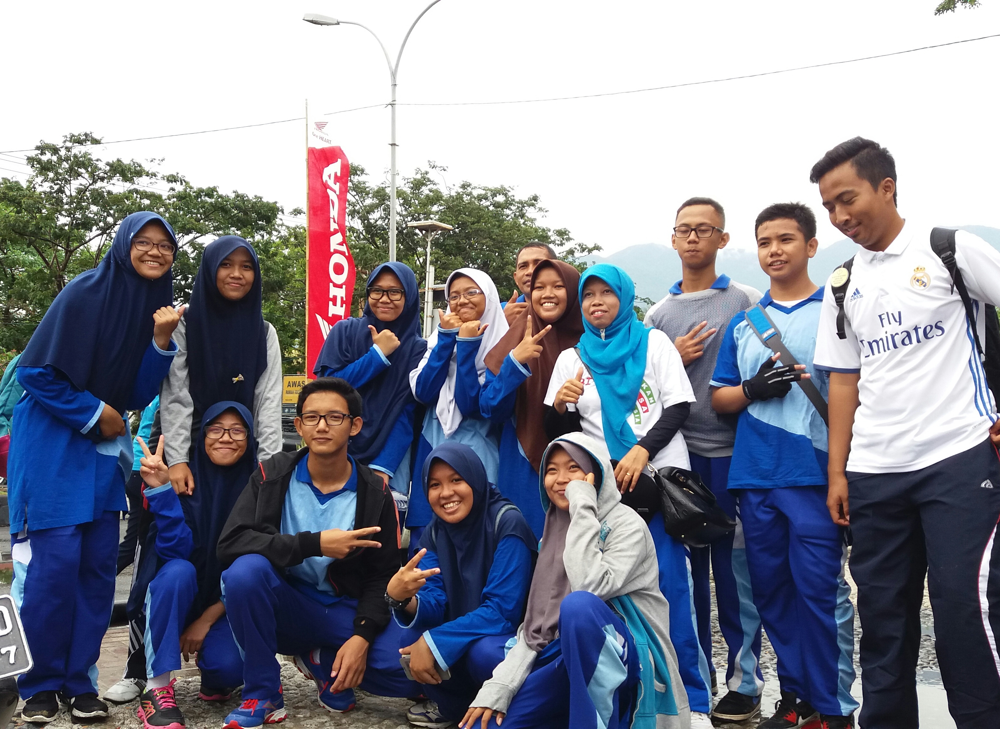

Who Are We.


 




Nama saya Fadhel Mohammad , biasanya dipanggil Fadel/padel. Saya lahir di Palu, tanggal 09 Agustus 2001. Sekarang saya berkuliah di UIN Datokarama Palu& Perbankan Syariah. Status sekarang belum kawen. Prinsip hidup saya adalah. kalau kita punya mimpi,tuliskan, ceritakan,bagikan ke orang lain,biarkan lebih banyak orang terlibat dalam mimpi kita ,dan kita punya lebih banyak alasan untuk mimpi itu terus hidup.pesan untuk SPARDZAF : Jan namango kalau sudah sukses ajg.
Nama saya Masyita Putri Bunga Baderan, biasanya dipanggil Masyita . Saya lahir di Limboto , tanggal 12 Desember 2000. Sekarang saya berkuliah di Universitas Negeri Gorontalo, Jurusan Teknik Sipil. Status sekarang gada, prenjon, nda pacaran🥲. Prinsip hidup saya adalah Allah segalanya. Pesan untuk SPARDZAF : jangan b lupa, b togor kalu baku lewat djln aba.
Nama saya MUHAMMAD RAIHAN MAWARDI , biasanya dipanggil REHAN . Saya lahir di PALU , tanggal 07 Agustus 2001. Sekarang saya berkuliah di universitas Tadulako dan jurusan S1 teknik sipil . Status sekarang mendekati dewa . Prinsip hidup saya adalah janganlah mengarungi dunia, karena burung pelatuk tak bisa bermekar. Pesan untuk SPARDZAF adalah If you think you will be alone, you are wrong, because you are.

Nama saya Annisa Qurratu Ain, biasanya dipanggil Aqua . Saya lahir di Sidodadi , tanggal 22 Juni 2001. Sekarang saya berkuliah di Universitas Hasanuddin Jurusan Arsitektur. Status sekarang Jomblo bahagia🤪. Prinsip hidup saya adalah syukuri apa yang ada, ikhlaskan apa yang sudah terjadi, usahakan kebaikan untuk diri sendiri dan orang lain. Pesan untuk SPARDZAF : semangat gess, semoga semua yg kalian lakukan di ridhoi sama Allah, sampai jumpa di reuni. Selalu jadi orang yang bermanfaat dimanapun, jangan lupakan aqua, lovyu.
Nama saya ibnu prima , biasanya dipanggil ronaldo . Saya lahir di italy , tanggal 30 oktober 2001. Sekarang saya berkuliah di universitas tadulako&jurusan teknik geologi. Status sekarang online. Prinsip hidup saya adalah if u tired just take a knife than cut ur neck. Pesan untuk SPARDZAF : sya tda mempunya pesan tapi sya ada kesan yaiitu teada juga ternyata haha.
Nama saya Munira, biasanya dipanggil Munir atau ila. Saya lahir di Talaga, desa paling pelosok, tanggal 20 Juli 2000. Sekarang saya berkuliah di UniversitasTadulako dengan mengambil S1 Teknik Geofisika, i'm a geophysical engineering. Status sekarang belum menikah. Prinsip hidup saya adalah apapun itu harus terus mencoba dan selalu berbuat baik. Pesan untuk SPARDZAF : Semangat dan sehat selalu, saat capek harus istirahat karna sehat itu mahal.
Nama saya Putra Almubdi Baasith Gobel , biasanya dipanggil Putra . Saya lahir di Palu , tanggal 18 April 2001. Sekarang saya berkuliah di kampus UIN ALAUDDIN MAKASSAR dan jurusan Ilmu Qur'an dan Tafsir. Status sekarang pelajar,joker,anak kos. Prinsip hidup saya adalah jangan berharap apapun sama manusia. Pesan untuk SPARDZAF : tetap jaga komunikasi.
Nama saya Dhiya Kesuma Wardani, Biasanya dipanggil Dhiya. Saya lahir di ToliToli yang biasanya sih dikenal dengan Kota Cengkeh, Tanggalnya bertepatan dengan Ultah Indonesia 17 Agustus 2001. Sekarang saya berkuliah di Universitas Tadulako Jurusan S1 Gizi. Status sekarang masih single. Prinsip hidup saya adalah "Selalu Berusaha Lebih Baik Dari Diriku Yang Dulu". Pesan untuk SPARDZAF: Dimanapun & Sesibuk Apapun Kalian Jangan Lupa Untuk Terus Beribadah Yah Gais...Stay Healthy and Being the Best Version Of You...LoVe YoU GuYs...
Nama saya Moh. Abib Safaqdillah, biasanya dipanggil Abif. Saya lahir di Palu, tanggal 28 Maret 2001. Sekarang saya berkuliah di Universitas Hasanuddin Jurusan Teknik Informatika. Status sekarang Seorang Mahasiswa. Prinsip hidup saya adalah KOFTTE (Keep On Fighting Till The End). Pesan untuk SPARDZAF : Tetaplah hidup walaupun tidak berguna.
Perkenalkan nama saya Ainun Nisha Tamagola, biasanya dipanggil Ainun. Saya lahir di Luwuk, tanggal 18 Februari 2001. Untuk sekarang saya berkuliah di Universitas Ahmad Dahlan Yogyakarta, jurusan Ilmu Gizi (ada rencana pindah sih). Status sekarang Alhamdulillah masih single. Prinsip hidup saya adalah "Setiap peristiwa menjadi pengalaman dan setiap pengalaman adalah pelajaran, So enjoy your life cause tomorrow is still mystery". Pesan untuk SPARDZAF : "Tetap solid, pantang menyerah dan nantikan hari esok dengan semangat, Semoga keberkahan Allah selalu bersama kita". Love you till whenever guys...
Nama saya Moh. Taufiq Manto , biasanya dipanggil Taufiq. Saya lahir di Gorontalo tepatnya di suatu desa yaitu Desa Dulupi, tanggal 06 Agustus 2000. Sekarang saya berkuliah di STIKES GIA MAKASSAR jurusan S1 keperawatan. Status sekarang mahasiswa. Prinsip hidup saya adalah setinggi-tingginya ilmu yang didapat, jngn pernah sombong terutama sama kedua orang tua, perlakukan mereka seperti King and Queen di kerajaan, klo kau abaikan itu meninggal ko. Pesan untuk SPARDZAF : Jangan baku lupa.
haii bestiee!! Kalo Vania Shafira itu tlalu panjang to, jadi bisa ngoni pangge Vania ato nia saja terserah. ana lahir di kota serambi madina, Gorontalo, 1 September 2000. Kesibukan saat ini alhamdulillah, kuliah & kerja di Universitas Negeri Gorontalo, Kesehatan Masyarakat. Kalo mo bahas status sekarang, do'akan jo supaya dilancarkan neh. Prinsip hidup dari dulu salalu ta tanam dalam diri harus sabar,kerja keras, bahagia. dan pastinya pesan untuk SPARDZAF, semangat kuliah, yang lagi kerja semangat kerja, selalu bahagia 🤍.
Nama saya Ayn Thufail , biasanya dipanggil Ayn . Saya lahir di Palu , tanggal 21 Desember 2000. Sekarang saya berkuliah di Universitas Islam Indonesia jurusan Teknik Sipil. Status sekarang Belum menikah. Prinsip hidup saya adalah selalu sibuk untuk hidup. Pesan untuk SPARDZAF : semangat terus.
Hi! Hello guis, nama lengkapku Nur Arda, tapi panggil saja Arda, pliss nda usah panggil lengkap sekali mentang-mentang namaku pendek. Fyi, Arda lahir disalah satu desa di kecamatan Tapa, Provinsi Gorontalo, tanggal 23 Maret 2001, yang sejak umur beberapa minggu tumbuh dan besar di kota Luwuk, Sulawesi Tengah. Sekarang, Arda lagi menjalani hidup sebagai salah satu mahasiswi program studi Ilmu Keperawatan di Universitas Hasanuddin sejak 2019. Status I'm Single and very Happy aja sih. Prinsip hidup Let it flow tapi jangan sampai hanyut hehe. Pesan buat SPARDZAF, humm See you on top, Spartan!

Nama saya Muhammad Adli dzil Ikram, biasanya dipanggil Azil, saya lahir di Palu, tanggal 30 Oktober 2000, sekarang saya berkuliah di UIN Maulana Malik Ibrahim Malang jurusan Manajemen, status sekarang pelajar, prinsip hidup saya adalah dunia sementara akhirat selamanya, pesan untuk SPARDZAF : Semoga semua harapan, cita-cita dan tujuan teman semua bisa terkabulkan dan menjadi orang yang sukses di kemudian hari.

Nama saya wardah fauziah ligatu , biasanya dipanggil wardah . Saya lahir di kotamobagu, sulawesi utara , tanggal 10 juni 2000. Sekarang saya berkuliah di universitas tadulako, jurusan teknik sipil. Status sekarang single. Prinsip hidup saya adalah jadilah orang baik dan jalanilah hidupmu menurut versi terbaik dirimu. Pesan untuk SPARDZAF : semangat terus dan selalu jadi orang baik.